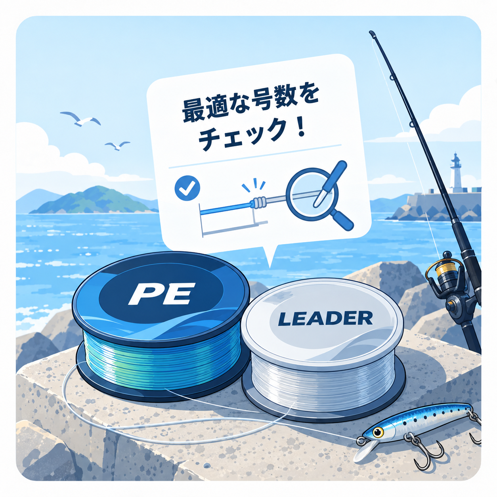

LINE & LEADER CHART
ライン・リーダー号数早見表
釣り方ごとの基本的なラインとリーダーの号数を一覧で確認できます。迷ったときに選びやすい基準もあわせて紹介します。

QUICK REFERENCE
釣り方別 ライン・リーダー早見表
まずは「迷ったら」を基準にし、魚の大きさや釣り場に合わせて範囲内で調整してください。
| 釣り方 | メインライン | 迷ったら | リーダー | 迷ったら | 補足 |
|---|---|---|---|---|---|
| エギングアオリイカ | PE 0.6〜1.0号 | PE 0.8号 | フロロ 2〜3号（約8〜12lb） | フロロ 2.5号（約10lb） | 春の大型や根周りでは太めを検討 |
| アジングアジ | PE 0.2〜0.4号 | PE 0.3号 | フロロ 0.8〜1.5号（約3〜6lb） | フロロ 1号（約4lb） | ジグ単ではエステルも一般的 |
| メバリングメバル | PE 0.3〜0.6号 | PE 0.4号 | フロロ 1〜2号（約4〜8lb） | フロロ 1.5号（約6lb） | 近距離のジグ単はフロロ通しも選択肢 |
| シーバスシーバス | PE 0.8〜1.2号 | PE 1.0号 | フロロ 4〜6号（約16〜24lb） | フロロ 5号（約20lb） | 障害物周りや大型狙いでは太めを検討 |
| ライトショアジギング小〜中型青物 | PE 1.0〜1.5号 | PE 1.2号 | フロロ 6〜10号（約24〜40lb） | フロロ 8号（約30lb） | 大型の回遊や磯では太めを検討 |
| ショアジギング中〜大型青物 | PE 1.5〜3.0号 | PE 2.0号 | フロロ／ナイロン 8〜14号（約30〜50lb） | 10号（約40lb） | ロッドの適合ラインを必ず確認 |
| チニングクロダイ・キビレ | PE 0.5〜1.0号 | PE 0.8号 | フロロ 2.5〜4号（約10〜16lb） | フロロ 3号（約12lb） | 根や障害物が多い場所では太めを検討 |
| ロックフィッシュハタ・アイナメ・ソイなど | PE 1.2〜2.0号 | PE 1.5号 | フロロ 5〜8号（約20〜30lb） | フロロ 6号（約24lb） | 岩礁帯と根への潜り込みを考慮 |
| バス釣りブラックバス | フロロ 6〜10lb | フロロ 8lb | 基本不要 | 基本不要 | 初心者向けスピニングの基準。ルアーとロッドで調整 |
| サビキ釣りアジ・イワシ・サバ | ナイロン 2〜4号 | ナイロン 3号 | 基本不要 | 基本不要 | 仕掛けとリールの対応号数も確認 |
| 投げ釣りキス・カレイなど | ナイロン 2〜4号 | ナイロン 3号 | 投げ釣り用の力糸 | 道糸・オモリに合う製品表示を確認 | オモリに合った力糸を必ず使用 |
| タイラバマダイ | PE 0.8〜1.0号 | PE 0.8号 | フロロ 3〜4号（約12〜16lb） | フロロ 3号（約12lb） | 船宿の指定がある場合はそちらを優先 |
| イカメタルケンサキイカ・スルメイカなど | PE 0.6〜0.8号 | PE 0.6号 | フロロ 3〜4号（約12〜16lb） | フロロ 3号（約12lb） | 海域差が大きいため船宿指定を最優先 |
| バチコンアジングアジ | PE 0.6〜0.8号 | PE 0.6号 | フロロ 3〜4号（約12〜16lb） | フロロ 3号（約12lb） | 仕掛けとオモリは船宿指定を優先 |
早見表は基本的な目安です
- 大型魚や根・障害物が多い場所では、対応範囲を確認して太めを検討してください。
- 軽量リグや開けた場所では細めが候補になりますが、傷や結び目をこまめに確認してください。
- 使用するロッド・リール・ルアー・仕掛けの適合範囲を優先してください。
- メーカーや船宿から指定がある場合は、その案内を優先してください。
こんなときは太め／細めを検討
太めを検討
- 想定より大きな魚も掛かる
- 根や障害物に擦れやすい
- 強引なやり取りが必要
- 重い仕掛けを使い、使用タックルの適合範囲内で余裕を持たせたい
細めを検討
- 小型魚を中心に狙う
- 軽いルアーや仕掛けを使う
- 障害物の少ない開けた場所
- 飛距離や潮・風への対応、操作性を重視したい
太さだけで強度や使いやすさは決まりません。ライン製品、結び方、傷、ロッド・リールとの組み合わせも確認してください。
ライン選びの基礎
メインラインの種類まで確認する
同じ「0.8号」でも、PE・ナイロン・フロロカーボンでは特徴が異なります。早見表では種類と太さを一緒に表示しています。
リーダーの役割
PEラインの先に、擦れに強いフロロカーボンや衝撃を吸収しやすいナイロンを接続します。バス釣りやサビキ釣りのように、メインラインを直接使う構成では基本的に不要です。
よくある質問
「迷ったら」の号数を必ず使う必要がありますか？
いいえ。初心者が最初の基準にしやすい太さです。ロッドとリールの適合範囲、製品表示、釣り場や船宿の指定を優先してください。
PEの同じ号数なら強度も同じですか？
同じとは限りません。編み本数、原糸、コーティングなどで強度や実際の太さが変わります。購入時は製品表示も確認してください。
リーダーのlbと号数が合わないことがあります
lbは強度、号数は太さの基準で、製品ごとに強度が異なります。早見表のlbは既存データにある目安であり、製品パッケージの表示を優先してください。